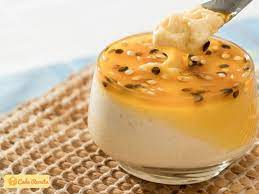
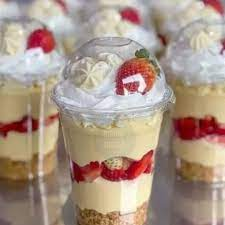

<!DOCTYPE html>
<html lang="pt-BR"> 
</html>

<head>
    <meta charset="UTF-8">
    <meta name="viewport" content="width=device-width, initial-scale=1.o">
    <meta name=description content="Maças do amor e mousses.">
    <title>maças e mousses</title>
    <link rel="stylesheet" type="text/css" href="style.css">
</head>

<main>
    <section>
        <h1 class="nome"><strong>M & M</strong></h1>
        <h3 class="venha">Venha conhecer nossas maças do amor e mousses</h3>
    </section>

    <section>
        <h3 class="titulo2"><strong>Quem somos?</strong></h3>
        <p class="paragrafo">Somos estudantes do ensino médio, nós começamos a vender pela nossa matéria em empreendedorismo. Temos em mente aprender a lidar com pessoas e situações inesperadas que podem acontecer no dia a dia, também aprender a gerenciar nosso dinheiro. </p>
</section>

<section>
    <h1 class="titulo3"><strong>Conheça nossos produtos!!</strong></h1>
    <ul class="lista" type="square">
        <li>maçã do amor</li>
        <li>mousse</li>
        <li>copo da felicidade</li>
    </ul>
</section>

<section>
    <h3 class="titulo4">Nossas maças do amor e mousses</h3>
    <p class="paragrafo2">produzidas com muita calma e carinho, pois como sabemos o quanto é dificil acertar uma calda. temos dois sabores como limão e maracujá e diversas "coberturas", como chocolate, calda de maracujá com ou sem semente e suspiro.</p>
     

<section>
    <h3 class="titulocopo">E nossa nova novidade, os copos da felicidade!!</h3>
    <p class="paragrafocopo">Depois de muitas pesquisas feitas por nós da m&m, decidimos que o copo da felicidade seria nossa melhor opção por enquanto. Utilizamos dois tipos de creme, de chocolate e leite em pó, com mousse que depende da escolha do cliente, com a opção de morango ou uva, suspiro ou chocalate. </p>
    
</section>

<section>
    <h2 class="de">Sugestões</h2>
    <p class="estamos">Estamos em busca de mais alimentos para vender, em breve teremos novidades!! deixe aqui em baixo o que você acha que te agradaria, tanto doces quanro salgados. Estamos a sua disposição.</p>
    <form class="sugestões" action="">
        <input class="opções" type="text" placeholder="sugestões">
<section>


</section>
    <p class="paragrafocardapio">conheça nosso cardapio com melhor visualização dos nossos produtos e seus preços</p>
    
<section>

</main>